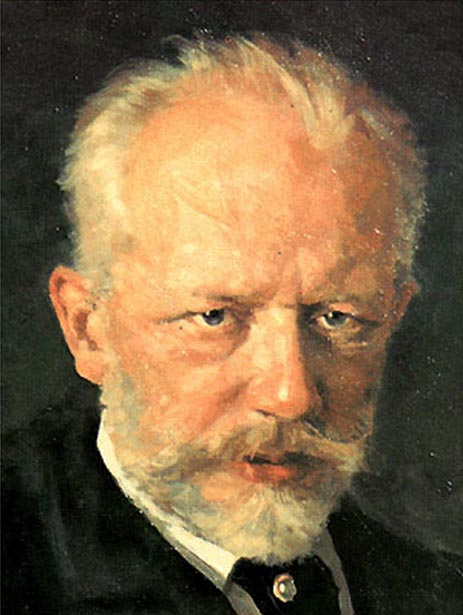

- Tchaikovsky
- Sibelius
- Mendelssohn
title
Tchaikovsky Violin Concerto
The Violin Concerto in D major, Op. 35, written by Pyotr Ilyich Tchaikovsky in 1878, is one of the best-known violin concertos.
The concerto is scored for solo violin, two flutes, two oboes, two clarinets in A and B-flat, two bassoons, four horns in F, two trumpets in D, timpani and strings.
